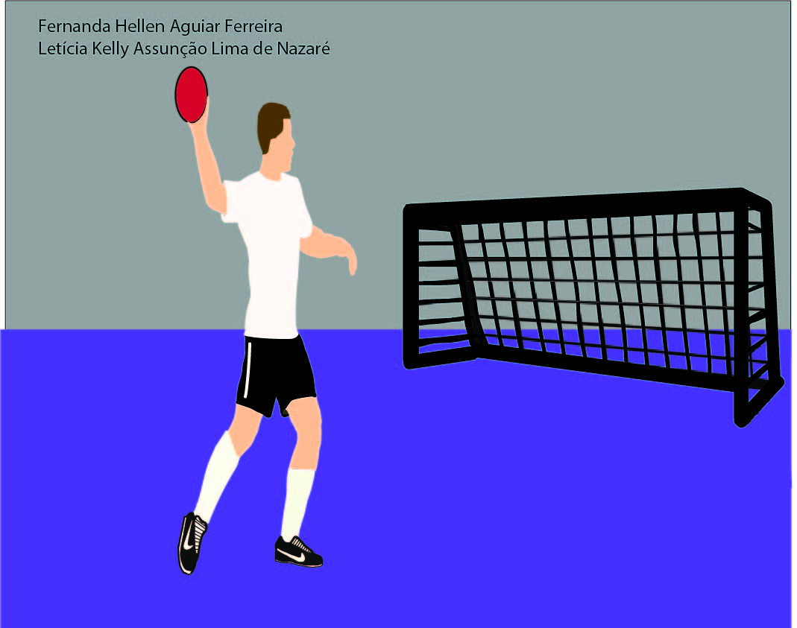
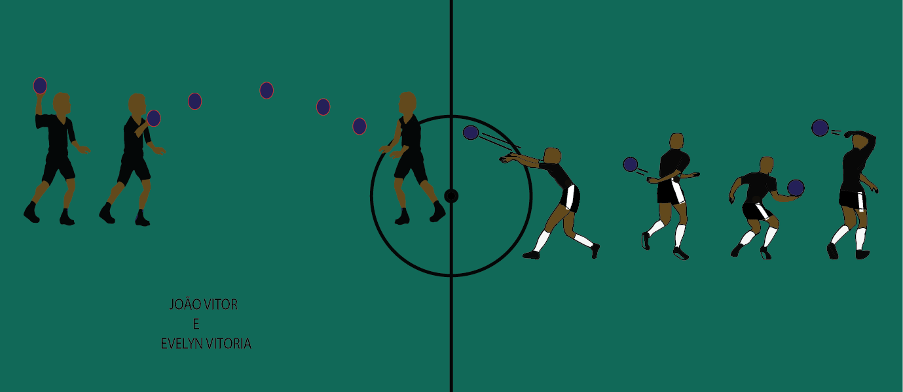
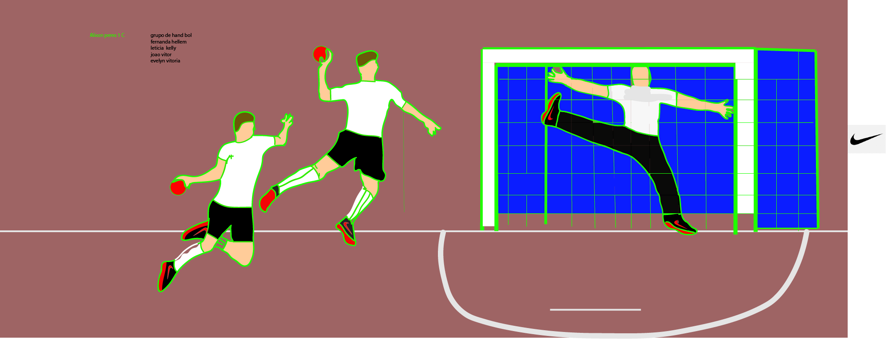

Conheça agora as principais Técnicas do Handebol: a Empunhadura, a Recepção, o Passe, o Arremesso, o Drible e a Finda.
TÉCNICA DE EMPUNHADURA NO HANDEBOL

tecnica de empunhadura do handebol
A Empunhadura é um das Técnicas mais básicas do Handebol, trata-se do ato de segurar a bola de Handebol com uma das mãos. A Empunhadura correta no Handebol é feita segurando a bola na palma da mão e apertando (fazendo pressão) com as pontas dos dedos.
Dica de execução: A pressão exercida pelos dedos polegar e mínimo é muito importante para a realização de uma boa empunhadura.
TÉCNICA DE RECEPÇÃO NO HANDEBOL
A Recepção é um das Técnicas mais mais simples do Handebol, trata-se do ato de receber (recepcionar) a bola. A Recepção no Handebol deve ser feita sempre com as duas mãos paralelas e ligeiramente côncavas (em forma de concha) e voltadas para frente.
Observação: A Recepção no Handebol também pode ser feita com uma só mão.
TÉCNICA DE PASSE NO HANDEBOL

passe do handebol
O Passe é um das principais Técnicas do Handebol, o passe é o ato de lançar a bola entre os jogadores de uma mesma equipe.
Quais são os Tipos de Passe no Handebol?
Passe acima do ombro: conhecido como Passe de Ombro, é o passe mais utilizado num jogo de Handebol, pode ser feito em trajetória reta ou parabólica.
Passe em pronação: O Passe em Pronação no Handebol feito segurando a bola com a palma da mão apontada para baixo e realizando um giro do punho para fora. Pode ser feito com direção lateral ou para trás.
Passe por de trás da cabeça: O passe por trás da cabeça no Handebol é executado exatamente como diz o nome, lançando a bola “por trás da cabeça”, pode ser feito em direção lateral ou diagonal.
Passe por de trás do corpo: O passe por trás do corpo é feito lançando a bola por trás do corpo, pode ser feito em direção lateral ou diagonal.
Passe para trás: É o passe feito na altura da cabeça com extensão do punho jogando a bola para trás.
Passe quicado: É quando a bola toca o solo da quadra uma vez antes de ser recepcionado pelo companheiro de equipe. Esse tipo de passe é utilizado para desviar a bola de um marcado adversário.
TÉCNICA DE ARREMESSO NO HANDEBOL

tecnica de arremeço do handebol
O Arremesso é também um das principais Técnicas do Handebol, é através do arremesso que se marca os gols em um jogo de Handebol. O Arremesso é o ato de lançar a bola em direção ao gol (meta) da equipe adversária.
Quais são os Tipos de Arremessos no Handebol?
Arremesso com apoio – É o tipo de arremesso no Handebol onde um ou os dois pés estão em contato com o solo no momento da execução do arremesso.
Arremesso em suspensão – Nesse tipo de Arremesso o jogador de Handebol realiza um salto e fica com o corpo completamento suspenso no ar no momento da execução do arremesso.
Arremesso com queda – É o tipo de Arremesso no Handebol onde o jogador projeta uma queda após o arremesso. Ao forçar uma queda o jogador de Handebol projeta o corpo e consegue colocar mais potência no arremesso.
Arremesso com rolamento – É o tipo de Arremesso onde após o jogador lançar a bola, ele realizado um rolamento, normalmente um rolamento de ombro. É um tipo de arremesso comumente utilizado pelos “Pontas” no Handebol.